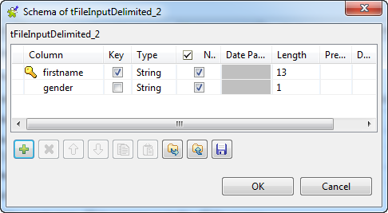
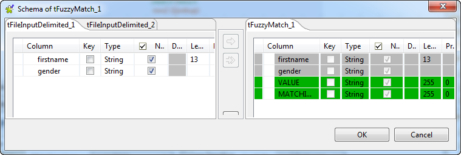
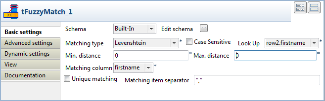
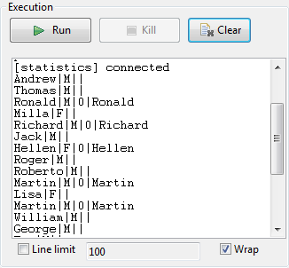
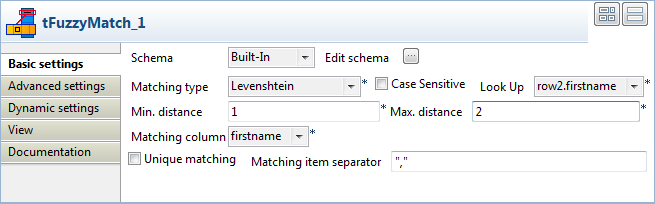
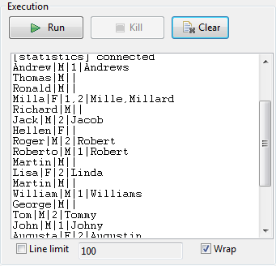
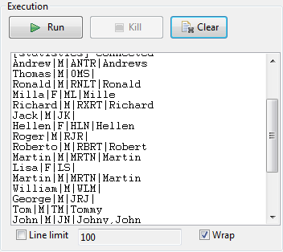

Scenario 1: Levenshtein distance of 0 in first names
This scenario describes a four-component job aiming at checking the edit distance between the First Name column of an input file with the data of the reference input file. The output of this Levenshtein type check is displayed along with the content of the main flow on a table

- Drag and drop the following components from the Palette to the workspace: tFileInputDelimited (x2), tFuzzyMatch, tFileOutputDelimited.
- Define the first tFileInputDelimited properties. Browse the system to the input file to be analysed and most importantly set the schema to be used for the flow to be checked.
- In the schema, set the Type of data in the Java version, especially if you are in Built-in mode.
- Link the defined input to the tFuzzyMatch using a Main row link.
- Define the second tFileInputDelimited component the same way.
- Then connect the second input component to the tFuzzyMatch using a main row (which displays as a Lookup row on the workspace).
- Select the tFuzzyMatch properties.
- The Schema should match the Main input flow schema in order for the main flow to be checked against the reference.
- Note that two columns, Value and Matching, are added to the output schema. These are standard matching information and are read-only.
- Select the method to be used to check the incoming data. In this scenario, Levenshtein is the Matching type to be used.
- Then set the distance. In this method, the distance is the number of char changes (insertion, deletion or substitution) that needs to be carried out in order for the entry to fully match the reference.
- In this use case, we want the distance be of 0 for the min. or for the max. This means only the exact matchs will be output.
- Also, uncheck the Case sensitive box.
- And select the column of the main flow schema that will be checked. In this example, the first name.
- No need to check the Unique matching nor hence the separator.
- Link the tFuzzyMatch to the standard output tLogRow. No other parameters than the display delimiter is ot be set for this scenario.
- Save the job and press F6 to execute the job.
WARNING-Make sure the reference column is set as key column in the schema of the lookup flow.




As the edit distance has been set to 0 (min and max), the output shows the result of a regular join between the main flow and the lookup (reference) flow, hence only full matchs with Value of 0 are displayed.
A more obvious example is with a minimum distance of 1 and a max. distance of 2, see Scenario 2: Levenshtein distance of 1 or 2 in first names.
Scenario 2: Levenshtein distance of 1 or 2 in first names
This scenario is based on the scenario 1 described above. Only the min and max distance settings in tFuzzyMatch component get modified, which will change the output displayed.
- In the Properties panel of the tFuzzyMatch, change the min distance from 0 to 1. This excludes straight away the exact matchs (which would show a distance of 0).
- Change also the max distance to 2 as the max distance cannot be lower than the min distance. The output will provide all matching entries showing a discrepancy of 2 characters at most.
- No other change of the setting is required.
- Make sure the Matching item separator is defined, as several references might be matching the main flow entry.
- Save the new job and press F6 to run it.


As the edit distance has been set to 2, some entries of the main flow match several reference entries.
You can also use another method, the metaphone, to assess the distance between the main flow and the reference,
Scenario 3: Metaphonic distance in first name
This scenario is based on the scenario 1 described above.
- Change the Matching type to Metaphone. There is no min nor max distance to set as the matching method is based on the discrepancies with the phonetics of the reference.
- Save the job and press F6. The phonetics value is displayed along with the possible matchs.
